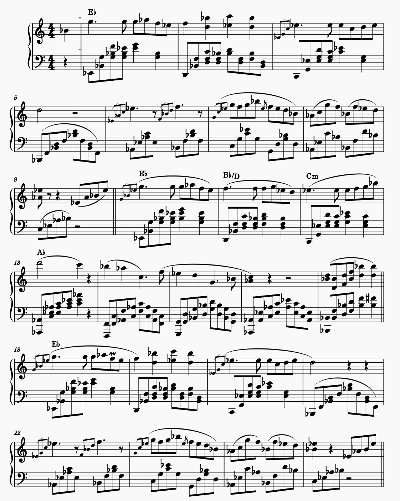

Composer / Pianist / Producer
Robin
Wohner
Replace this paragraph with a few sentences about the music you make and the films or artists you want to work with.

RobinCopenhagen, Denmark
Composer / Pianist / Producer
Replace this paragraph with a few sentences about the music you make and the films or artists you want to work with.
